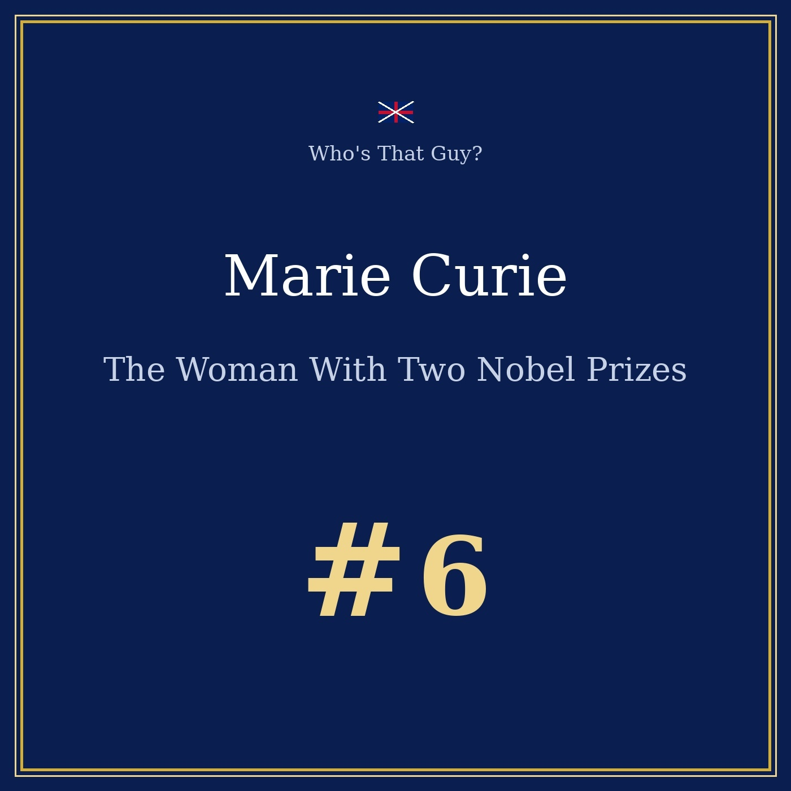
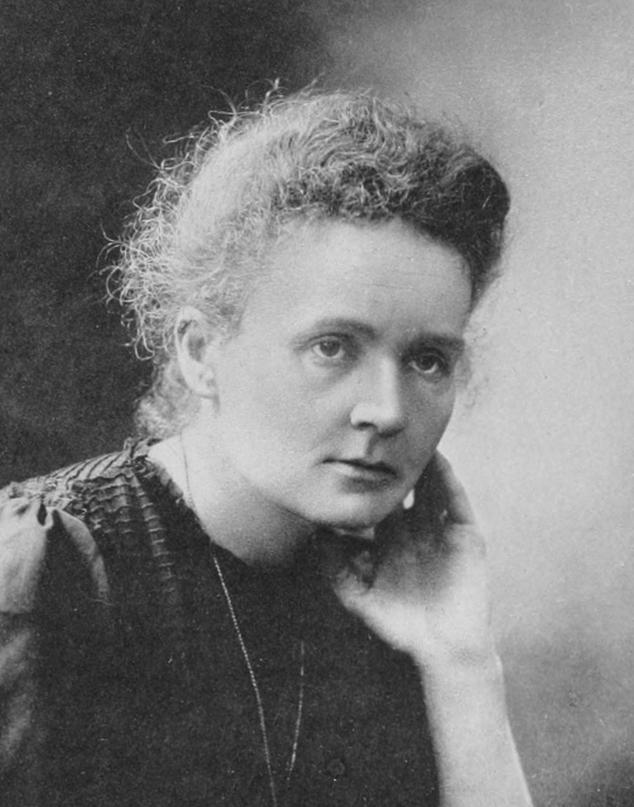

Episode 6 — from a secret school in occupied Poland to the only double Nobel Prize in history
This program is a work of fictional radio biography, for educational and cultural purposes. Marie Curie really existed and all the biographical facts here are real and verifiable; but the interview you are about to hear is an imagined reconstruction by our editorial team.

🎧 Listen to the portrait: Marie Curie — The Woman With Two Nobel Prizes, 13 min 54 — Listen on Spotify →

Maria Skłodowska was born in 1867 in Warsaw, in the Poland of that time — occupied, divided, administered from abroad. Her childhood was studious and overshadowed by grief: she lost her mother very young, then one of her sisters to typhus. Her father taught mathematics and physics, but the Russian rule had stripped him of his post and impoverished the family. They lived, in her words, in fragile dignity.
The most telling detail is what she and her sisters built against that. A young Polish woman could not enter a university, so the sisters set up a flying university: secret classes held in apartments, the meeting place moved constantly. There she understood that knowledge was at once a weapon and a freedom.
She worked for years as a governess, in families across the Polish countryside, studying in the evenings alone, so that her sister Bronia could study in Paris — with the promise that Bronia would in turn welcome her. In 1891, at twenty-four, she took the train to Paris with nothing more than a blanket and a few belongings. She was cold and often hungry, but at last she was at the Sorbonne.
That arrival was both a deliverance and a test: an attic room without fire, barely eating, working to exhaustion and sometimes fainting over her books — but what joy, to hear professors speak freely about science. In 1893 she earned her degree in physics, first in her class; the following year, in 1894, the mathematics degree, second. Then she began to look for a laboratory.
It was that laboratory that brought her to Pierre Curie. A physicist friend told her he knew a remarkable man of science who might lend her a corner of his laboratory for her measurements. They met in 1894, and she felt at once that she had found a rare spirit — a man who shared her dream of a life devoted to research, slave to neither convention nor vanity. It took her time to accept leaving Poland; she thought she would return one day. They married in 1895.
In 1897, looking for a subject for her thesis, Marie Curie asked a question nobody else was asking. Henri Becquerel had just shown that uranium salts emit strange rays — but the phenomenon had been observed, not measured. She decided to measure, with a very sensitive instrument perfected by Pierre and his brother Jacques, which quantified the conductivity of the air under the effect of those radiations.
The result changed everything: the emission depended neither on chemical combination, nor on light, nor on temperature. It was a property of the atom itself — and she proposed the word radioactivity. Then came the second, shattering observation. Certain ores, such as pitchblende, were far more active than the pure uranium they contained: something new, and infinitely more powerful, had to be hiding inside.
They announced polonium in July 1898, named in honour of her native country, then radium in December. But announcing an element is not enough — it must be isolated, weighed, its existence proven by its quantity. There the terrible years began: tons of pitchblende processed in a dilapidated shed, without protection, boiling vats stirred in iron basins in all weathers. It took them years to extract, from tonnes of ore, a few tiny traces of pure radium.
The consecration came in 1903: the Nobel Prize in Physics, shared with Pierre and Henri Becquerel. Yet her name nearly failed to appear on it. The first nominations mentioned only the two men; it took Pierre's insistence, and that of a few supporters, for her to be associated with the prize. She did not make a drama of it — but she noted it: a woman could work, suffer, discover, and still find people hesitating to acknowledge her part.
Then, in 1906, a tragedy of another kind. Pierre died, struck down by a horse-drawn carriage in the middle of a Paris street. In a single instant she lost the man she loved and the man she thought with — but she felt she had no right to collapse: she had their children, and their work. The Sorbonne offered her his chair, and so in 1906 she became the first woman professor at that university, taking over his lectures exactly where he had left them. She went on, because going on was the only way to remain faithful to him.
In 1911 came a second Nobel Prize, this time in chemistry, for the discovery of polonium and radium and the isolation of pure radium. She became the first person — and remains the only one — to receive two Nobel Prizes in two different sciences. She took the distinction with a certain weariness: that same year also brought a press campaign of unheard-of violence around her private life. The laboratory, on the other hand, never betrays.
From 1914 onwards, she put radioactivity at the service of the wounded. X-rays could save lives by locating shrapnel inside the bodies of soldiers, so she had mobile radiology cars fitted out, nicknamed the "little Curies", with fixed stations installed in the hospitals of the front. She trained hundreds of operators, and drove several of those cars herself, with her daughter Irène beside her — the most concrete proof imaginable that science can be useful to humankind.
Her daughter Irène followed in her footsteps and would herself win, in 1935, the Nobel Prize in Chemistry alongside her husband Frédéric Joliot. Marie called that the finest success of her life — even before her own discoveries — because science is a chain, a transmission, and not a collection of individual glories. The Radium Institute trained scholars from every corner of the world. That, she said, was the real harvest.
The family laboratory had its darker side. Radium was handled without protection; vials were kept in a pocket, and their blue glow amazed everyone who saw them. She knew the substance burned — she carried radiation marks on her fingers — but nobody imagined the invisible threat. She suffered from the consequences of those years, and said she regretted nothing: "We paid for knowledge; others, after us, will know how to protect themselves."
She died in 1934 of aplastic anaemia, a blood disease almost certainly linked to her years of radiation. Her laboratory notebooks are still radioactive enough to be kept in lead safes, and must be handled with protection to be consulted — a century later proof of the power of what she isolated. Radioactivity, she said, opened the way to a new understanding of matter, and also to weapons and power stations that humanity will have to answer in full conscience. Her discovery belonged to no one: it belonged to everyone, with the responsibilities that go with it.
Her message to the young, and to young girls in particular, was simple. Nothing is written in advance — not the place of women, not the place of knowledge, not the borders. Learn, question, persevere: that is how one honours life.
Every notebook that passed through the Radium Institute is now handled as radioactive material: sealed in lead-lined boxes, consulted only with protection. It is the visible scar of an invisible discovery. Her summary of the lesson — a sentence often attributed to her, and one she stood by: "Nothing in life is to be feared, everything is to be understood." With a caveat: caution is not unnecessary, but the unknown must never be allowed to hold us back.
Sources: Wikipedia (Marie Curie), Nobel Prize (Physics 1903 / Chemistry 1911), Musée Curie. Fact-checked November 2026.